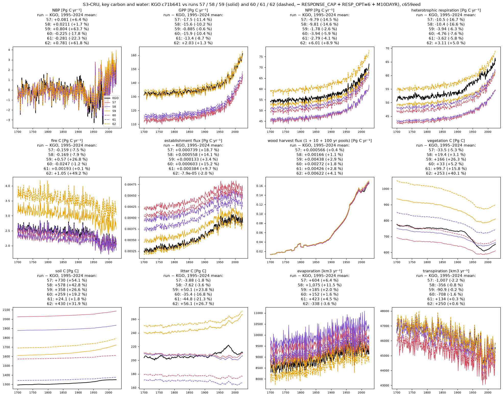
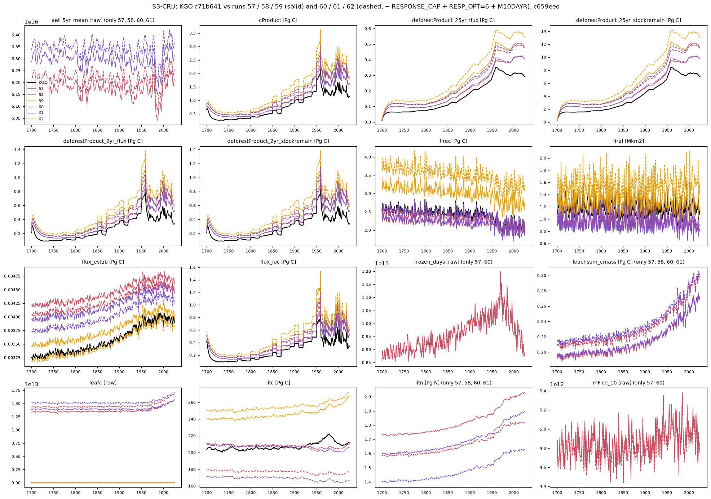
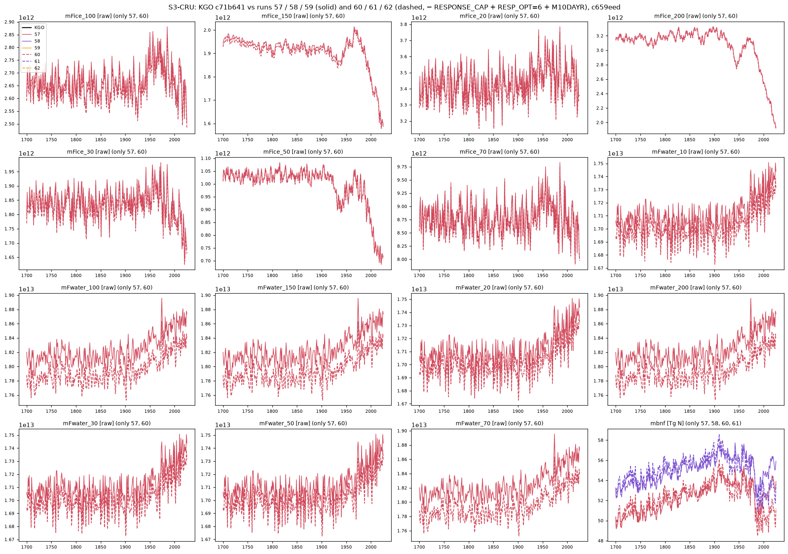
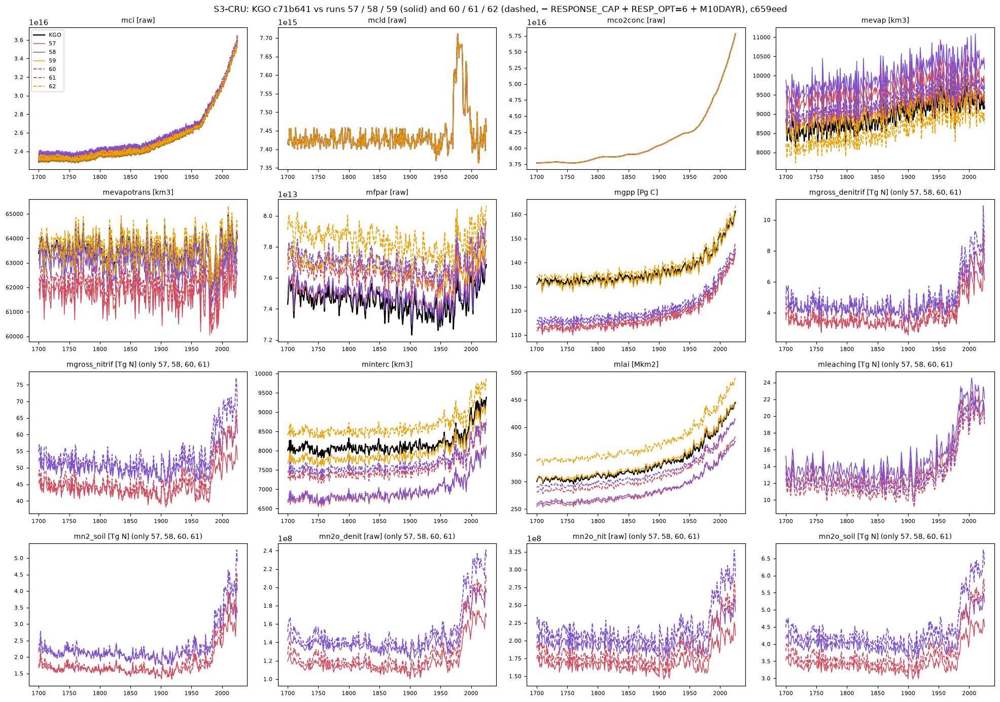
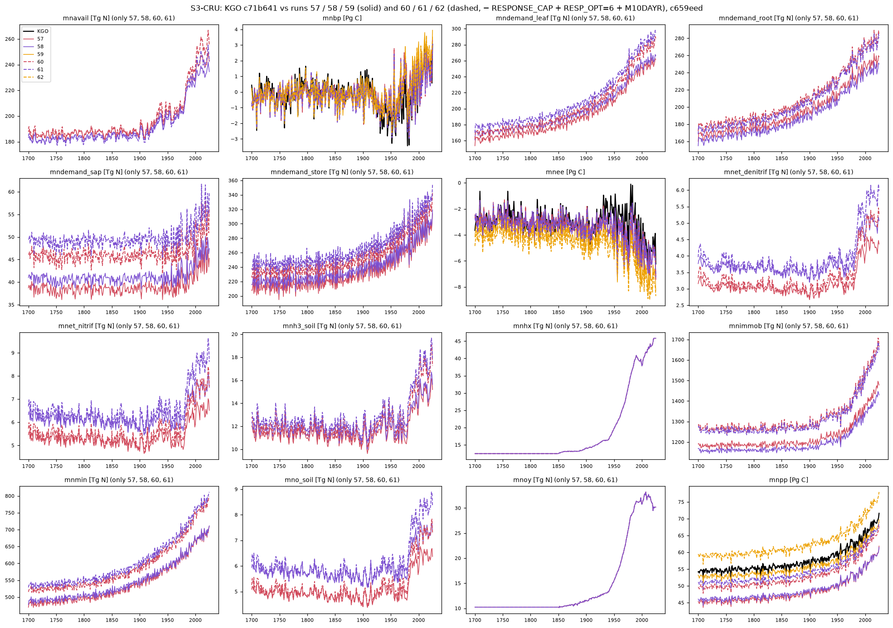
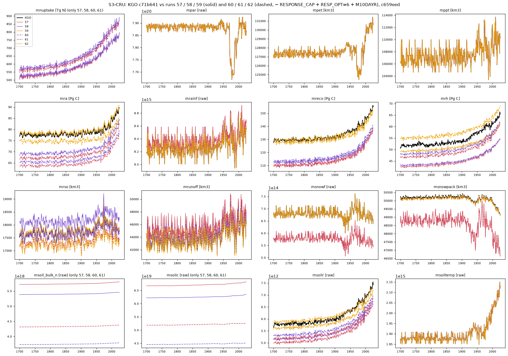
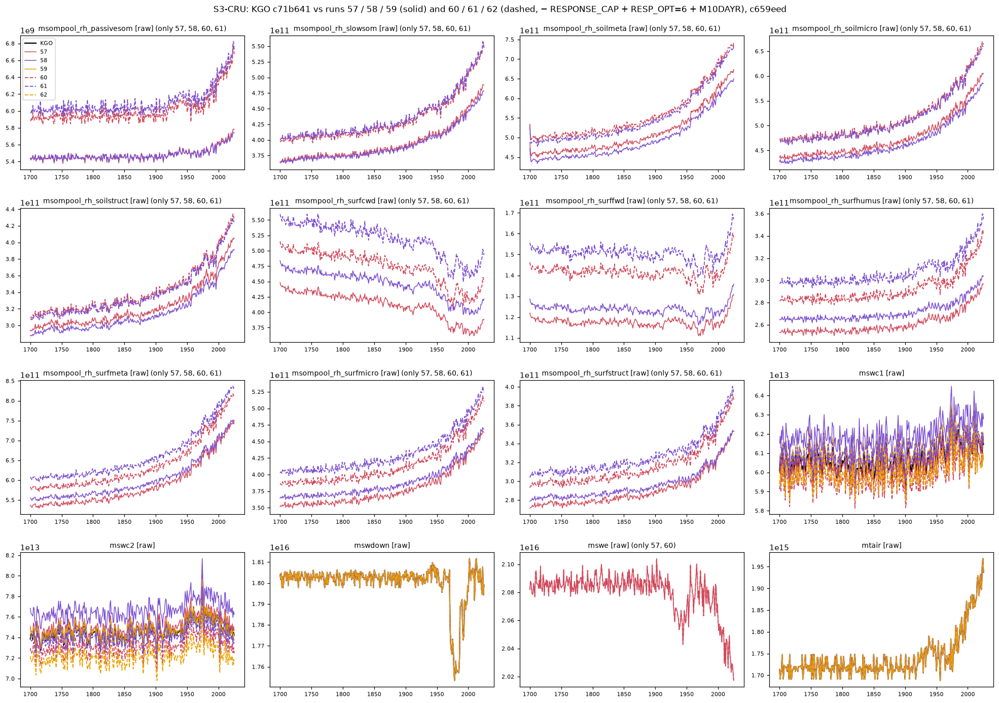
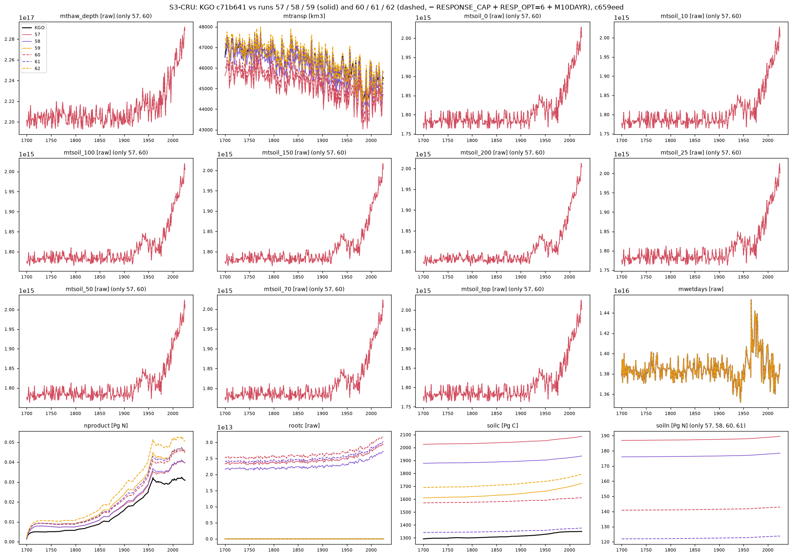
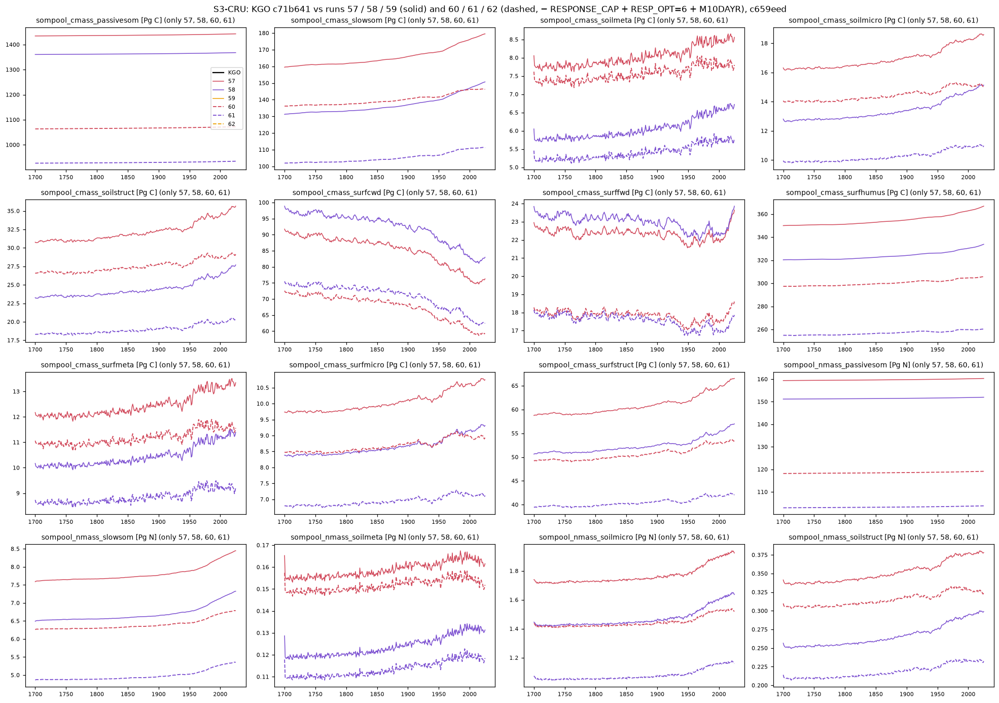
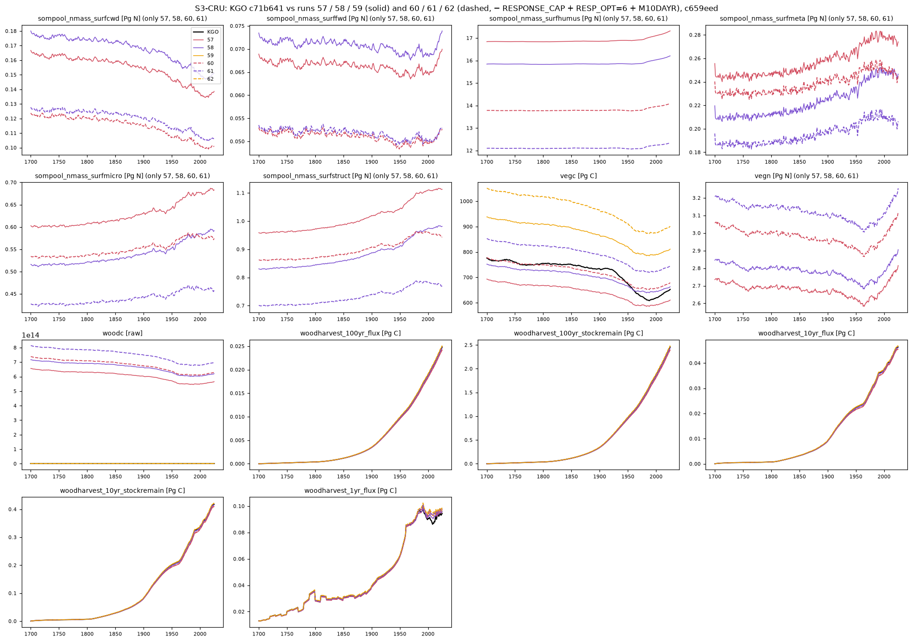

Same plots as the CI global-run report. KGO kgo-c71b641-S3-CRU-r1-pr441-a1 in black. 60 / 61 / 62 = 57 / 58 / 59 − RESPONSE_CAP + RESP_OPT=6 + M10DAYR; each pair shares a colour. 142 variables nonzero in at least one run. Screen table: screen.csv.









